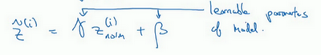
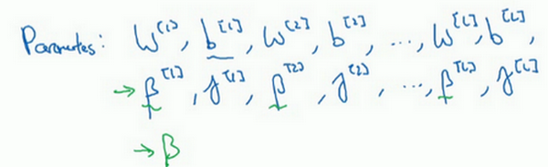
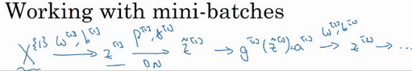
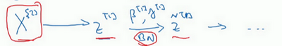
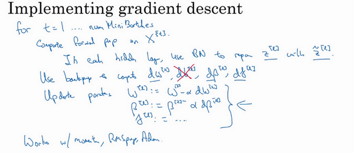
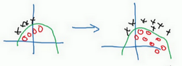
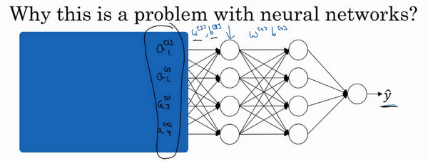
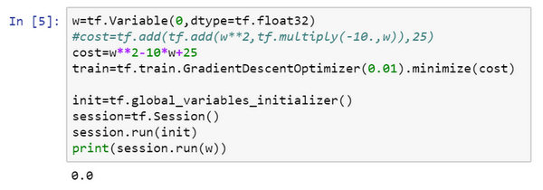

Lesson2 week3
第三周 超参数调试、Batch正则化和程序框架（Hyperparameter tuning）¶
3.1 调试处理（Tuning process）¶
大家好，欢迎回来，目前为止，你已经了解到，神经网络的改变会涉及到许多不同超参数的设置。现在，对于超参数而言，你要如何找到一套好的设定呢？在此视频中，我想和你分享一些指导原则，一些关于如何系统地组织超参调试过程的技巧，希望这些能够让你更有效的聚焦到合适的超参设定中。

关于训练深度最难的事情之一是你要处理的参数的数量，从学习速率\(a\)到Momentum（动量梯度下降法）的参数\(\beta\)。如果使用Momentum或Adam优化算法的参数，\(\beta_{1}\)，\({\beta}_{2}\)和\(\varepsilon\)，也许你还得选择层数，也许你还得选择不同层中隐藏单元的数量，也许你还想使用学习率衰减。所以，你使用的不是单一的学习率\(a\)。接着，当然你可能还需要选择mini-batch的大小。
结果证实一些超参数比其它的更为重要，我认为，最为广泛的学习应用是\(a\)，学习速率是需要调试的最重要的超参数。
除了\(a\)，还有一些参数需要调试，例如Momentum参数\(\beta\)，0.9就是个很好的默认值。我还会调试mini-batch的大小，以确保最优算法运行有效。我还会经常调试隐藏单元，我用橙色圈住的这些，这三个是我觉得其次比较重要的，相对于\(a\)而言。重要性排第三位的是其他因素，层数有时会产生很大的影响，学习率衰减也是如此。当应用Adam算法时，事实上，我从不调试\(\beta_{1}\)，\({\beta}_{2}\)和\(\varepsilon\)，我总是选定其分别为0.9，0.999和\(10^{-8}\)，如果你想的话也可以调试它们。
但希望你粗略了解到哪些超参数较为重要，\(a\)无疑是最重要的，接下来是我用橙色圈住的那些，然后是我用紫色圈住的那些，但这不是严格且快速的标准，我认为，其它深度学习的研究者可能会很不同意我的观点或有着不同的直觉。

现在，如果你尝试调整一些超参数，该如何选择调试值呢？在早一代的机器学习算法中，如果你有两个超参数，这里我会称之为超参1，超参2，常见的做法是在网格中取样点，像这样，然后系统的研究这些数值。这里我放置的是5×5的网格，实践证明，网格可以是5×5，也可多可少，但对于这个例子，你可以尝试这所有的25个点，然后选择哪个参数效果最好。当参数的数量相对较少时，这个方法很实用。
在深度学习领域，我们常做的，我推荐你采用下面的做法，随机选择点，所以你可以选择同等数量的点，对吗？25个点，接着，用这些随机取的点试验超参数的效果。之所以这么做是因为，对于你要解决的问题而言，你很难提前知道哪个超参数最重要，正如你之前看到的，一些超参数的确要比其它的更重要。
举个例子，假设超参数1是\(a\)（学习速率），取一个极端的例子，假设超参数2是Adam算法中，分母中的\(\varepsilon\)。在这种情况下，\(a\)的取值很重要，而\(\varepsilon\)取值则无关紧要。如果你在网格中取点，接着，你试验了\(a\)的5个取值，那你会发现，无论\(\varepsilon\)取何值，结果基本上都是一样的。所以，你知道共有25种模型，但进行试验的\(a\)值只有5个，我认为这是很重要的。
对比而言，如果你随机取值，你会试验25个独立的\(a\)，似乎你更有可能发现效果做好的那个。

我已经解释了两个参数的情况，实践中，你搜索的超参数可能不止两个。假如，你有三个超参数，这时你搜索的不是一个方格，而是一个立方体，超参数3代表第三维，接着，在三维立方体中取值，你会试验大量的更多的值，三个超参数中每个都是。

实践中，你搜索的可能不止三个超参数有时很难预知，哪个是最重要的超参数，对于你的具体应用而言，随机取值而不是网格取值表明，你探究了更多重要超参数的潜在值，无论结果是什么。
当你给超参数取值时，另一个惯例是采用由粗糙到精细的策略。

比如在二维的那个例子中，你进行了取值，也许你会发现效果最好的某个点，也许这个点周围的其他一些点效果也很好，那在接下来要做的是放大这块小区域（小蓝色方框内），然后在其中更密集得取值或随机取值，聚集更多的资源，在这个蓝色的方格中搜索，如果你怀疑这些超参数在这个区域的最优结果，那在整个的方格中进行粗略搜索后，你会知道接下来应该聚焦到更小的方格中。在更小的方格中，你可以更密集得取点。所以这种从粗到细的搜索也经常使用。
通过试验超参数的不同取值，你可以选择对训练集目标而言的最优值，或对于开发集而言的最优值，或在超参搜索过程中你最想优化的东西。
我希望，这能给你提供一种方法去系统地组织超参数搜索过程。另一个关键点是随机取值和精确搜索，考虑使用由粗糙到精细的搜索过程。但超参数的搜索内容还不止这些，在下一个视频中，我会继续讲解关于如何选择超参数取值的合理范围。
3.2 为超参数选择合适的范围（Using an appropriate scale to pick hyperparameters）¶
在上一个视频中，你已经看到了在超参数范围中，随机取值可以提升你的搜索效率。但随机取值并不是在有效范围内的随机均匀取值，而是选择合适的标尺，用于探究这些超参数，这很重要。在这个视频中，我会教你怎么做。

假设你要选取隐藏单元的数量\(n^{[l]}\)，假设，你选取的取值范围是从50到100中某点，这种情况下，看到这条从50-100的数轴，你可以随机在其取点，这是一个搜索特定超参数的很直观的方式。或者，如果你要选取神经网络的层数，我们称之为字母\(L\)，你也许会选择层数为2到4中的某个值，接着顺着2，3，4随机均匀取样才比较合理，你还可以应用网格搜索，你会觉得2，3，4，这三个数值是合理的，这是在几个在你考虑范围内随机均匀取值的例子，这些取值还蛮合理的，但对某些超参数而言不适用。

看看这个例子，假设你在搜索超参数\(a\)（学习速率），假设你怀疑其值最小是0.0001或最大是1。如果你画一条从0.0001到1的数轴，沿其随机均匀取值，那90%的数值将会落在0.1到1之间，结果就是，在0.1到1之间，应用了90%的资源，而在0.0001到0.1之间，只有10%的搜索资源，这看上去不太对。
反而，用对数标尺搜索超参数的方式会更合理，因此这里不使用线性轴，分别依次取0.0001，0.001，0.01，0.1，1，在对数轴上均匀随机取点，这样，在0.0001到0.001之间，就会有更多的搜索资源可用，还有在0.001到0.01之间等等。

所以在Python中，你可以这样做，使r=-4*np.random.rand()，然后\(a\)随机取值，$ a =10^{r}\(，所以，第一行可以得出\)r \in [ 4,0]\(，那么\)a \in[10{-4},10{0}]\(，所以最左边的数字是\)10{-4}\(，最右边是\)10{0}$。

更常见的情况是，如果你在\(10^{a}\)和\(10^{b}\)之间取值，在此例中，这是\(10^{a}\)（0.0001），你可以通过\(\operatorname{}{0.0001}\)算出\(a\)的值，即-4，在右边的值是\(10^{b}\)，你可以算出\(b\)的值\(\operatorname{}1\)，即0。你要做的就是在\([a,b]\)区间随机均匀地给\(r\)取值，这个例子中\(r \in \lbrack - 4,0\rbrack\)，然后你可以设置\(a\)的值，基于随机取样的超参数\(a =10^{r}\)。

所以总结一下，在对数坐标下取值，取最小值的对数就得到\(a\)的值，取最大值的对数就得到\(b\)值，所以现在你在对数轴上的\(10^{a}\)到\(10^{b}\)区间取值，在\(a\)，\(b\)间随意均匀的选取\(r\)值，将超参数设置为\(10^{r}\)，这就是在对数轴上取值的过程。

最后，另一个棘手的例子是给\(\beta\) 取值，用于计算指数的加权平均值。假设你认为\(\beta\)是0.9到0.999之间的某个值，也许这就是你想搜索的范围。记住这一点，当计算指数的加权平均值时，取0.9就像在10个值中计算平均值，有点类似于计算10天的温度平均值，而取0.999就是在1000个值中取平均。
所以和上张幻灯片上的内容类似，如果你想在0.9到0.999区间搜索，那就不能用线性轴取值，对吧？不要随机均匀在此区间取值，所以考虑这个问题最好的方法就是，我们要探究的是\(1-\beta\)，此值在0.1到0.001区间内，所以我们会给\(1-\beta\)取值，大概是从0.1到0.001，应用之前幻灯片中介绍的方法，这是\(10^{-1}\)，这是\(10^{-3}\)，值得注意的是，在之前的幻灯片里，我们把最小值写在左边，最大值写在右边，但在这里，我们颠倒了大小。这里，左边的是最大值，右边的是最小值。所以你要做的就是在\([-3,-1]\)里随机均匀的给r取值。你设定了\(1- \beta = 10^{r}\)，所以\(\beta = 1-10^{r}\)，然后这就变成了在特定的选择范围内超参数随机取值。希望用这种方式得到想要的结果，你在0.9到0.99区间探究的资源，和在0.99到0.999区间探究的一样多。

所以，如果你想研究更多正式的数学证明，关于为什么我们要这样做，为什么用线性轴取值不是个好办法，这是因为当\(\beta\) 接近1时，所得结果的灵敏度会变化，即使\(\beta\)有微小的变化。所以\(\beta\) 在0.9到0.9005之间取值，无关紧要，你的结果几乎不会变化。

但\(\beta\)值如果在0.999到0.9995之间，这会对你的算法产生巨大影响，对吧？在这两种情况下，是根据大概10个值取平均。但这里，它是指数的加权平均值，基于1000个值，现在是2000个值，因为这个公式\(\frac{1}{1- \beta}\)，当\(\beta\)接近1时，\(\beta\)就会对细微的变化变得很敏感。所以整个取值过程中，你需要更加密集地取值，在\(\beta\) 接近1的区间内，或者说，当\(1-\beta\) 接近于0时，这样，你就可以更加有效的分布取样点，更有效率的探究可能的结果。
希望能帮助你选择合适的标尺，来给超参数取值。如果你没有在超参数选择中作出正确的标尺决定，别担心，即使你在均匀的标尺上取值，如果数值总量较多的话，你也会得到还不错的结果，尤其是应用从粗到细的搜索方法，在之后的迭代中，你还是会聚焦到有用的超参数取值范围上。
希望这会对你的超参数搜索有帮助，下一个视频中，我们将会分享一些关于如何组建搜索过程的思考，希望它能使你的工作更高效。
3.3 超参数调试的实践：Pandas VS Caviar（Hyperparameters tuning in practice: Pandas vs. Caviar）¶
到现在为止，你已经听了许多关于如何搜索最优超参数的内容，在结束我们关于超参数搜索的讨论之前，我想最后和你分享一些建议和技巧，关于如何组织你的超参数搜索过程。

如今的深度学习已经应用到许多不同的领域，某个应用领域的超参数设定，有可能通用于另一领域，不同的应用领域出现相互交融。比如，我曾经看到过计算机视觉领域中涌现的巧妙方法，比如说Confonets或ResNets，这我们会在后续课程中讲到。它还成功应用于语音识别，我还看到过最初起源于语音识别的想法成功应用于NLP等等。
深度学习领域中，发展很好的一点是，不同应用领域的人们会阅读越来越多其它研究领域的文章，跨领域去寻找灵感。
就超参数的设定而言，我见到过有些直觉想法变得很缺乏新意，所以，即使你只研究一个问题，比如说逻辑学，你也许已经找到一组很好的参数设置，并继续发展算法，或许在几个月的过程中，观察到你的数据会逐渐改变，或也许只是在你的数据中心更新了服务器，正因为有了这些变化，你原来的超参数的设定不再好用，所以我建议，或许只是重新测试或评估你的超参数，至少每隔几个月一次，以确保你对数值依然很满意。
最后，关于如何搜索超参数的问题，我见过大概两种重要的思想流派或人们通常采用的两种重要但不同的方式。

一种是你照看一个模型，通常是有庞大的数据组，但没有许多计算资源或足够的CPU和GPU的前提下，基本而言，你只可以一次负担起试验一个模型或一小批模型，在这种情况下，即使当它在试验时，你也可以逐渐改良。比如，第0天，你将随机参数初始化，然后开始试验，然后你逐渐观察自己的学习曲线，也许是损失函数J，或者数据设置误差或其它的东西，在第1天内逐渐减少，那这一天末的时候，你可能会说，看，它学习得真不错。我试着增加一点学习速率，看看它会怎样，也许结果证明它做得更好，那是你第二天的表现。两天后，你会说，它依旧做得不错，也许我现在可以填充下Momentum或减少变量。然后进入第三天，每天，你都会观察它，不断调整你的参数。也许有一天，你会发现你的学习率太大了，所以你可能又回归之前的模型，像这样，但你可以说是在每天花时间照看此模型，即使是它在许多天或许多星期的试验过程中。所以这是一个人们照料一个模型的方法，观察它的表现，耐心地调试学习率，但那通常是因为你没有足够的计算能力，不能在同一时间试验大量模型时才采取的办法。

另一种方法则是同时试验多种模型，你设置了一些超参数，尽管让它自己运行，或者是一天甚至多天，然后你会获得像这样的学习曲线，这可以是损失函数J或实验误差或损失或数据误差的损失，但都是你曲线轨迹的度量。同时你可以开始一个有着不同超参数设定的不同模型，所以，你的第二个模型会生成一个不同的学习曲线，也许是像这样的一条（紫色曲线），我会说这条看起来更好些。与此同时，你可以试验第三种模型，其可能产生一条像这样的学习曲线（红色曲线），还有另一条（绿色曲线），也许这条有所偏离，像这样，等等。或者你可以同时平行试验许多不同的模型，橙色的线就是不同的模型。用这种方式你可以试验许多不同的参数设定，然后只是最后快速选择工作效果最好的那个。在这个例子中，也许这条看起来是最好的（下方绿色曲线）。

打个比方，我把左边的方法称为熊猫方式。当熊猫有了孩子，他们的孩子非常少，一次通常只有一个，然后他们花费很多精力抚养熊猫宝宝以确保其能成活，所以，这的确是一种照料，一种模型类似于一只熊猫宝宝。对比而言，右边的方式更像鱼类的行为，我称之为鱼子酱方式。在交配季节，有些鱼类会产下一亿颗卵，但鱼类繁殖的方式是，它们会产生很多卵，但不对其中任何一个多加照料，只是希望其中一个，或其中一群，能够表现出色。我猜，这就是哺乳动物繁衍和鱼类，很多爬虫类动物繁衍的区别。我将称之为熊猫方式与鱼子酱方式，因为这很有趣，更容易记住。
所以这两种方式的选择，是由你拥有的计算资源决定的，如果你拥有足够的计算机去平行试验许多模型，那绝对采用鱼子酱方式，尝试许多不同的超参数，看效果怎么样。但在一些应用领域，比如在线广告设置和计算机视觉应用领域，那里的数据太多了，你需要试验大量的模型，所以同时试验大量的模型是很困难的，它的确是依赖于应用的过程。但我看到那些应用熊猫方式多一些的组织，那里，你会像对婴儿一样照看一个模型，调试参数，试着让它工作运转。尽管，当然，甚至是在熊猫方式中，试验一个模型，观察它工作与否，也许第二或第三个星期后，也许我应该建立一个不同的模型（绿色曲线），像熊猫那样照料它，我猜，这样一生中可以培育几个孩子，即使它们一次只有一个孩子或孩子的数量很少。

所以希望你能学会如何进行超参数的搜索过程，现在，还有另一种技巧，能使你的神经网络变得更加坚实，它并不是对所有的神经网络都适用，但当适用时，它可以使超参数搜索变得容易许多并加速试验过程，我们在下个视频中再讲解这个技巧。
3.4 归一化网络的激活函数（Normalizing activations in a network）¶
在深度学习兴起后，最重要的一个思想是它的一种算法，叫做Batch归一化，由Sergey loffe和Christian Szegedy两位研究者创造。Batch归一化会使你的参数搜索问题变得很容易，使神经网络对超参数的选择更加稳定，超参数的范围会更加庞大，工作效果也很好，也会是你的训练更加容易，甚至是深层网络。让我们来看看Batch归一化是怎么起作用的吧。

当训练一个模型，比如logistic回归时，你也许会记得，归一化输入特征可以加快学习过程。你计算了平均值，从训练集中减去平均值，计算了方差，接着根据方差归一化你的数据集，在之前的视频中我们看到，这是如何把学习问题的轮廓，从很长的东西，变成更圆的东西，更易于算法优化。所以这是有效的，对logistic回归和神经网络的归一化输入特征值而言。

那么更深的模型呢？你不仅输入了特征值\(x\)，而且这层有激活值\(a^{[1]}\)，这层有激活值\(a^{[2]}\)等等。如果你想训练这些参数，比如\(w^{[3]}\)，\(b^{[3]}\)，那归一化\(a^{[2]}\)的平均值和方差岂不是很好？以便使\(w^{[3]}\)，\(b^{[3]}\)的训练更有效率。在logistic回归的例子中，我们看到了如何归一化\(x_{1}\)，\(x_{2}\)，\(x_{3}\)，会帮助你更有效的训练\(w\)和\(b\)。
所以问题来了，对任何一个隐藏层而言，我们能否归一化\(a\)值，在此例中，比如说\(a^{[2]}\)的值，但可以是任何隐藏层的，以更快的速度训练\(w^{[3]}\)，\(b^{[3]}\)，因为\(a^{[2]}\)是下一层的输入值，所以就会影响\(w^{[3]}\)，\(b^{[3]}\)的训练。简单来说，这就是Batch归一化的作用。尽管严格来说，我们真正归一化的不是\(a^{[2]}\)，而是\(z^{[2]}\)，深度学习文献中有一些争论，关于在激活函数之前是否应该将值\(z^{[2]}\)归一化，或是否应该在应用激活函数\(a^{[2]}\)后再规范值。实践中，经常做的是归一化\(z^{[2]}\)，所以这就是我介绍的版本，我推荐其为默认选择，那下面就是Batch归一化的使用方法。

在神经网络中，已知一些中间值，假设你有一些隐藏单元值，从\(z^{(1)}\)到\(z^{(m)}\)，这些来源于隐藏层，所以这样写会更准确，即\(z^{[l](i)}\)为隐藏层，\(i\)从1到\(m\)，但这样书写，我要省略\(l\)及方括号，以便简化这一行的符号。所以已知这些值，如下，你要计算平均值，强调一下，所有这些都是针对\(l\)层，但我省略\(l\)及方括号，然后用正如你常用的那个公式计算方差，接着，你会取每个\(z^{(i)}\)值，使其规范化，方法如下，减去均值再除以标准偏差，为了使数值稳定，通常将\(\varepsilon\)作为分母，以防\(σ=0\)的情况。

所以现在我们已把这些\(z\)值标准化，化为含平均值0和标准单位方差，所以\(z\)的每一个分量都含有平均值0和方差1，但我们不想让隐藏单元总是含有平均值0和方差1，也许隐藏单元有了不同的分布会有意义，所以我们所要做的就是计算，我们称之为\({\tilde{z}}^{(i)}\)，\({\tilde{z}}^{(i)}= \gamma z_{\text{norm}}^{(i)} +\beta\)，这里\(\gamma\)和\(\beta\)是你模型的学习参数，所以我们使用梯度下降或一些其它类似梯度下降的算法，比如Momentum或者Nesterov，Adam，你会更新\(\gamma\)和\(\beta\)，正如更新神经网络的权重一样。

请注意\(\gamma\)和\(\beta\)的作用是，你可以随意设置\({\tilde{z}}^{(i)}\)的平均值，事实上，如果\(\gamma= \sqrt{\sigma^{2} +\varepsilon}\)，如果\(\gamma\)等于这个分母项（\(z_{\text{norm}}^{(i)} = \frac{z^{(i)} -\mu}{\sqrt{\sigma^{2} +\varepsilon}}\)中的分母），\(\beta\)等于\(\mu\)，这里的这个值是\(z_{\text{norm}}^{(i)}= \frac{z^{(i)} - \mu}{\sqrt{\sigma^{2} + \varepsilon}}\)中的\(\mu\)，那么\(\gamma z_{\text{norm}}^{(i)} +\beta\)的作用在于，它会精确转化这个方程，如果这些成立（\(\gamma =\sqrt{\sigma^{2} + \varepsilon},\beta =\mu\)），那么\({\tilde{z}}^{(i)} = z^{(i)}\)。
通过对\(\gamma\)和\(\beta\)合理设定，规范化过程，即这四个等式，从根本来说，只是计算恒等函数，通过赋予\(\gamma\)和\(\beta\)其它值，可以使你构造含其它平均值和方差的隐藏单元值。

所以，在网络匹配这个单元的方式，之前可能是用\(z^{(1)}\)，\(z^{(2)}\)等等，现在则会用\({\tilde{z}}^{(i)}\)取代\(z^{(i)}\)，方便神经网络中的后续计算。如果你想放回\([l]\)，以清楚的表明它位于哪层，你可以把它放这。

所以我希望你学到的是，归一化输入特征\(X\)是怎样有助于神经网络中的学习，Batch归一化的作用是它适用的归一化过程，不只是输入层，甚至同样适用于神经网络中的深度隐藏层。你应用Batch归一化了一些隐藏单元值中的平均值和方差，不过训练输入和这些隐藏单元值的一个区别是，你也许不想隐藏单元值必须是平均值0和方差1。

比如，如果你有sigmoid激活函数，你不想让你的值总是全部集中在这里，你想使它们有更大的方差，或不是0的平均值，以便更好的利用非线性的sigmoid函数，而不是使所有的值都集中于这个线性版本中，这就是为什么有了\(\gamma\)和\(\beta\)两个参数后，你可以确保所有的\(z^{(i)}\)值可以是你想赋予的任意值，或者它的作用是保证隐藏的单元已使均值和方差标准化。那里，均值和方差由两参数控制，即\(\gamma\)和\(\beta\)，学习算法可以设置为任何值，所以它真正的作用是，使隐藏单元值的均值和方差标准化，即\(z^{(i)}\)有固定的均值和方差，均值和方差可以是0和1，也可以是其它值，它是由\(\gamma\)和\(\beta\)两参数控制的。
我希望你能学会怎样使用Batch归一化，至少就神经网络的单一层而言，在下一个视频中，我会教你如何将Batch归一化与神经网络甚至是深度神经网络相匹配。对于神经网络许多不同层而言，又该如何使它适用，之后，我会告诉你，Batch归一化有助于训练神经网络的原因。所以如果觉得Batch归一化起作用的原因还显得有点神秘，那跟着我走，在接下来的两个视频中，我们会弄清楚。
3.5 将 Batch Norm 拟合进神经网络（Fitting Batch Norm into a neural network）¶
你已经看到那些等式，它可以在单一隐藏层进行Batch归一化，接下来，让我们看看它是怎样在深度网络训练中拟合的吧。

假设你有一个这样的神经网络，我之前说过，你可以认为每个单元负责计算两件事。第一，它先计算z，然后应用其到激活函数中再计算a，所以我可以认为，每个圆圈代表着两步的计算过程。同样的，对于下一层而言，那就是\(z_{1}^{[2]}\)和\(a_{1}^{[2]}\)等。所以如果你没有应用Batch归一化，你会把输入\(X\)拟合到第一隐藏层，然后首先计算\(z^{[1]}\)，这是由\(w^{[1]}\)和\(b^{[1]}\)两个参数控制的。接着，通常而言，你会把\(z^{[1]}\)拟合到激活函数以计算\(a^{[1]}\)。但Batch归一化的做法是将\(z^{[1]}\)值进行Batch归一化，简称BN，此过程将由\({\beta}^{[1]}\)和\(\gamma^{[1]}\)两参数控制，这一操作会给你一个新的规范化的\(z^{[1]}\)值（\({\tilde{z}}^{[1]}\)），然后将其输入激活函数中得到\(a^{[1]}\)，即\(a^{[1]} = g^{[1]}({\tilde{z}}^{[ l]})\)。

现在，你已在第一层进行了计算，此时Batch归一化发生在z的计算和\(a\)之间，接下来，你需要应用\(a^{[1]}\)值来计算\(z^{[2]}\)，此过程是由\(w^{[2]}\)和\(b^{[2]}\)控制的。与你在第一层所做的类似，你会将\(z^{[2]}\)进行Batch归一化，现在我们简称BN，这是由下一层的Batch归一化参数所管制的，即\({\beta}^{[2]}\)和\(\gamma^{[2]}\)，现在你得到\({\tilde{z}}^{[2]}\)，再通过激活函数计算出\(a^{[2]}\)等等。
所以需要强调的是Batch归一化是发生在计算\(z\)和\(a\)之间的。直觉就是，与其应用没有归一化的\(z\)值，不如用归一过的\(\tilde{z}\)，这是第一层（\({\tilde{z}}^{[1]}\)）。第二层同理，与其应用没有规范过的\(z^{[2]}\)值，不如用经过方差和均值归一后的\({\tilde{z}}^{[2]}\)。所以，你网络的参数就会是\(w^{[1]}\)，\(b^{[1]}\)，\(w^{[2]}\)和\(b^{[2]}\)等等，我们将要去掉这些参数。但现在，想象参数\(w^{[1]}\)，\(b^{[1]}\)到\(w^{[l]}\)，\(b^{[l]}\)，我们将另一些参数加入到此新网络中\({\beta}^{[1]}\)，\({\beta}^{[2]}\)，\(\gamma^{[1]}\)，\(\gamma^{[2]}\)等等。对于应用Batch归一化的每一层而言。需要澄清的是，请注意，这里的这些\(\beta\)（\({\beta}^{[1]}\)，\({\beta}^{[2]}\)等等）和超参数\(\beta\)没有任何关系，下一张幻灯片中会解释原因，后者是用于Momentum或计算各个指数的加权平均值。Adam论文的作者，在论文里用\(\beta\)代表超参数。Batch归一化论文的作者，则使用\(\beta\)代表此参数（\({\beta}^{[1]}\)，\({\beta}^{[2]}\)等等），但这是两个完全不同的\(\beta\)。我在两种情况下都决定使用\(\beta\)，以便你阅读那些原创的论文，但Batch归一化学习参数\({\beta}^{[1]}\)，\({\beta}^{\left\lbrack2 \right\rbrack}\)等等和用于Momentum、Adam、RMSprop算法中的\(\beta\)不同。

所以现在，这是你算法的新参数，接下来你可以使用想用的任何一种优化算法，比如使用梯度下降法来执行它。
举个例子，对于给定层，你会计算\(d{\beta}^{[l]}\)，接着更新参数\(\beta\)为\({\beta}^{[l]} = {\beta}^{[l]} - \alpha d{\beta}^{[l]}\)。你也可以使用Adam或RMSprop或Momentum，以更新参数\(\beta\)和\(\gamma\)，并不是只应用梯度下降法。
即使在之前的视频中，我已经解释过Batch归一化是怎么操作的，计算均值和方差，减去均值，再除以方差，如果它们使用的是深度学习编程框架，通常你不必自己把Batch归一化步骤应用于Batch归一化层。因此，探究框架，可写成一行代码，比如说，在TensorFlow框架中，你可以用这个函数（tf.nn.batch_normalization）来实现Batch归一化，我们稍后讲解，但实践中，你不必自己操作所有这些具体的细节，但知道它是如何作用的，你可以更好的理解代码的作用。但在深度学习框架中，Batch归一化的过程，经常是类似一行代码的东西。
所以，到目前为止，我们已经讲了Batch归一化，就像你在整个训练站点上训练一样，或就像你正在使用Batch梯度下降法。

实践中，Batch归一化通常和训练集的mini-batch一起使用。你应用Batch归一化的方式就是，你用第一个mini-batch(\(X^{\{1\}}\))，然后计算\(z^{[1]}\)，这和上张幻灯片上我们所做的一样，应用参数\(w^{[1]}\)和\(b^{[1]}\)，使用这个mini-batch(\(X^{\{1\}}\))。接着，继续第二个mini-batch(\(X^{\{2\}}\))，接着Batch归一化会减去均值，除以标准差，由\({\beta}^{[1]}\)和\(\gamma^{[1]}\)重新缩放，这样就得到了\({\tilde{z}}^{[1]}\)，而所有的这些都是在第一个mini-batch的基础上，你再应用激活函数得到\(a^{[1]}\)。然后用\(w^{[2]}\)和\(b^{[2]}\)计算\(z^{[2]}\)，等等，所以你做的这一切都是为了在第一个mini-batch(\(X^{\{1\}}\))上进行一步梯度下降法。

类似的工作，你会在第二个mini-batch（\(X^{\left\{2 \right\}}\)）上计算\(z^{[1]}\)，然后用Batch归一化来计算\({\tilde{z}}^{[1]}\)，所以Batch归一化的此步中，你用第二个mini-batch（\(X^{\left\{2 \right\}}\)）中的数据使\({\tilde{z}}^{[1]}\)归一化，这里的Batch归一化步骤也是如此，让我们来看看在第二个mini-batch（\(X^{\left\{2 \right\}}\)）中的例子，在mini-batch上计算\(z^{[1]}\)的均值和方差，重新缩放的\(\beta\)和\(\gamma\)得到\(z^{[1]}\)，等等。
然后在第三个mini-batch（\(X^{\left\{ 3 \right\}}\)）上同样这样做，继续训练。
现在，我想澄清此参数的一个细节。先前我说过每层的参数是\(w^{[l]}\)和\(b^{[l]}\)，还有\({\beta}^{[l]}\)和\(\gamma^{[l]}\)，请注意计算\(z\)的方式如下，\(z^{[l]} =w^{[l]}a^{\left\lbrack l - 1 \right\rbrack} +b^{[l]}\)，但Batch归一化做的是，它要看这个mini-batch，先将\(z^{[l]}\)归一化，结果为均值0和标准方差，再由\(\beta\)和\(\(\gamma\)\)重缩放，但这意味着，无论\(b^{[l]}\)的值是多少，都是要被减去的，因为在Batch归一化的过程中，你要计算\(z^{[l]}\)的均值，再减去平均值，在此例中的mini-batch中增加任何常数，数值都不会改变，因为加上的任何常数都将会被均值减去所抵消。

所以，如果你在使用Batch归一化，其实你可以消除这个参数（\(b^{[l]}\)），或者你也可以，暂时把它设置为0，那么，参数变成\(z^{[l]} = w^{[l]}a^{\left\lbrack l - 1 \right\rbrack}\)，然后你计算归一化的\(z^{[l]}\)，\({\tilde{z}}^{[l]} = \gamma^{[l]}z^{[l]} + {\beta}^{[l]}\)，你最后会用参数\({\beta}^{[l]}\)，以便决定\({\tilde{z}}^{[l]}\)的取值，这就是原因。

所以总结一下，因为Batch归一化超过了此层\(z^{[l]}\)的均值，\(b^{[l]}\)这个参数没有意义，所以，你必须去掉它，由\({\beta}^{[l]}\)代替，这是个控制参数，会影响转移或偏置条件。
最后，请记住\(z^{[l]}\)的维数，因为在这个例子中，维数会是\((n^{[l]},1)\)，\(b^{[l]}\)的尺寸为\((n^{[l]},1)\)，如果是l层隐藏单元的数量，那\({\beta}^{[l]}\)和\(\gamma^{[l]}\)的维度也是\((n^{[l]},1)\)，因为这是你隐藏层的数量，你有\(n^{[l]}\)隐藏单元，所以\({\beta}^{[l]}\)和\(\gamma^{[l]}\)用来将每个隐藏层的均值和方差缩放为网络想要的值。

让我们总结一下关于如何用Batch归一化来应用梯度下降法，假设你在使用mini-batch梯度下降法，你运行\(t=1\)到batch数量的for循环，你会在mini-batch \(X^{\left\{ t\right\}}\)上应用正向prop，每个隐藏层都应用正向prop，用Batch归一化代替\(z^{[l]}\)为\({\tilde{z}}^{[l]}\)。接下来，它确保在这个mini-batch中，\(z\)值有归一化的均值和方差，归一化均值和方差后是\({\tilde{z}}^{[l]}\)，然后，你用反向prop计算\(dw^{[l]}\)和\(db^{[l]}\)，及所有l层所有的参数，\(d{\beta}^{[l]}\)和\(d\gamma^{[l]}\)。尽管严格来说，因为你要去掉\(b\)，这部分其实已经去掉了。最后，你更新这些参数：\(w^{[l]} = w^{[l]} -\text{αd}w^{[l]}\)，和以前一样，\({\beta}^{[l]} = {\beta}^{[l]} - {αd}{\beta}^{[l]}\)，对于\(\gamma\)也是如此\(\gamma^{[l]} = \gamma^{[l]} -{αd}\gamma^{[l]}\)。
如果你已将梯度计算如下，你就可以使用梯度下降法了，这就是我写到这里的，但也适用于有Momentum、RMSprop、Adam的梯度下降法。与其使用梯度下降法更新mini-batch，你可以使用这些其它算法来更新，我们在之前几个星期中的视频中讨论过的，也可以应用其它的一些优化算法来更新由Batch归一化添加到算法中的\(\beta\) 和\(\gamma\) 参数。

我希望，你能学会如何从头开始应用Batch归一化，如果你想的话。如果你使用深度学习编程框架之一，我们之后会谈。，希望，你可以直接调用别人的编程框架，这会使Batch归一化的使用变得很容易。
现在，以防Batch归一化仍然看起来有些神秘，尤其是你还不清楚为什么其能如此显著的加速训练，我们进入下一个视频，详细讨论Batch归一化为何效果如此显著，它到底在做什么。
3.6 Batch Norm 为什么奏效？（Why does Batch Norm work?）¶
为什么Batch归一化会起作用呢？
一个原因是，你已经看到如何归一化输入特征值\(x\)，使其均值为0，方差1，它又是怎样加速学习的，有一些从0到1而不是从1到1000的特征值，通过归一化所有的输入特征值\(x\)，以获得类似范围的值，可以加速学习。所以Batch归一化起的作用的原因，直观的一点就是，它在做类似的工作，但不仅仅对于这里的输入值，还有隐藏单元的值，这只是Batch归一化作用的冰山一角，还有些深层的原理，它会有助于你对Batch归一化的作用有更深的理解，让我们一起来看看吧。
Batch归一化有效的第二个原因是，它可以使权重比你的网络更滞后或更深层，比如，第10层的权重更能经受得住变化，相比于神经网络中前层的权重，比如第1层，为了解释我的意思，让我们来看看这个最生动形象的例子。

这是一个网络的训练，也许是个浅层网络，比如logistic回归或是一个神经网络，也许是个浅层网络，像这个回归函数。或一个深层网络，建立在我们著名的猫脸识别检测上，但假设你已经在所有黑猫的图像上训练了数据集，如果现在你要把此网络应用于有色猫，这种情况下，正面的例子不只是左边的黑猫，还有右边其它颜色的猫，那么你的cosfa可能适用的不会很好。

如果图像中，你的训练集是这个样子的，你的正面例子在这儿，反面例子在那儿（左图），但你试图把它们都统一于一个数据集，也许正面例子在这，反面例子在那儿（右图）。你也许无法期待，在左边训练得很好的模块，同样在右边也运行得很好，即使存在运行都很好的同一个函数，但你不会希望你的学习算法去发现绿色的决策边界，如果只看左边数据的话。

所以使你数据改变分布的这个想法，有个有点怪的名字“Covariate shift”，想法是这样的，如果你已经学习了\(x\)到\(y\) 的映射，如果\(x\) 的分布改变了，那么你可能需要重新训练你的学习算法。这种做法同样适用于，如果真实函数由\(x\) 到\(y\) 映射保持不变，正如此例中，因为真实函数是此图片是否是一只猫，训练你的函数的需要变得更加迫切，如果真实函数也改变，情况就更糟了。

“Covariate shift”的问题怎么应用于神经网络呢？试想一个像这样的深度网络，让我们从这层（第三层）来看看学习过程。此网络已经学习了参数\(w^{[3]}\)和\(b^{[3]}\)，从第三隐藏层的角度来看，它从前层中取得一些值，接着它需要做些什么，使希望输出值\(\hat y\)接近真实值\(y\)。

让我先遮住左边的部分，从第三隐藏层的角度来看，它得到一些值，称为\(a_{1}^{[2]}\)，\(a_{2}^{[2]}\)，\(a_{3}^{[2]}\)，\(a_{4}^{[2]}\)，但这些值也可以是特征值\(x_{1}\)，\(x_{2}\)，\(x_{3}\)，\(x_{4}\)，第三层隐藏层的工作是找到一种方式，使这些值映射到\(\hat y\)，你可以想象做一些截断，所以这些参数\(w^{[3]}\)和\(b^{[3]}\)或\(w^{[4]}\)和\(b^{[4]}\)或\(w^{[5]}\)和\(b^{[5]}\)，也许是学习这些参数，所以网络做的不错，从左边我用黑色笔写的映射到输出值\(\hat y\)。

现在我们把网络的左边揭开，这个网络还有参数\(w^{[2]}\)，\(b^{[2]}\)和\(w^{[1]}\)，\(b^{[1]}\)，如果这些参数改变，这些\(a^{[2]}\)的值也会改变。所以从第三层隐藏层的角度来看，这些隐藏单元的值在不断地改变，所以它就有了“Covariate shift”的问题，上张幻灯片中我们讲过的。

Batch归一化做的，是它减少了这些隐藏值分布变化的数量。如果是绘制这些隐藏的单元值的分布，也许这是重整值\(z\)，这其实是\(z_{1}^{[2]}\)，\(z_{2}^{[2]}\)，我要绘制两个值而不是四个值，以便我们设想为2D，Batch归一化讲的是\(z_{1}^{[2]}\)，\(z_{2}^{[2]}\)的值可以改变，它们的确会改变，当神经网络在之前层中更新参数，Batch归一化可以确保无论其怎样变化\(z_{1}^{[2]}\)，\(z_{2}^{[2]}\)的均值和方差保持不变，所以即使\(z_{1}^{[2]}\)，\(z_{2}^{[2]}\)的值改变，至少他们的均值和方差也会是均值0，方差1，或不一定必须是均值0，方差1，而是由\({\beta}^{[2]}\)和\(\gamma^{[2]}\)决定的值。如果神经网络选择的话，可强制其为均值0，方差1，或其他任何均值和方差。但它做的是，它限制了在前层的参数更新，会影响数值分布的程度，第三层看到的这种情况，因此得到学习。
Batch归一化减少了输入值改变的问题，它的确使这些值变得更稳定，神经网络的之后层就会有更坚实的基础。即使使输入分布改变了一些，它会改变得更少。它做的是当前层保持学习，当改变时，迫使后层适应的程度减小了，你可以这样想，它减弱了前层参数的作用与后层参数的作用之间的联系，它使得网络每层都可以自己学习，稍稍独立于其它层，这有助于加速整个网络的学习。

所以，希望这能带给你更好的直觉，重点是Batch归一化的意思是，尤其从神经网络后层之一的角度而言，前层不会左右移动的那么多，因为它们被同样的均值和方差所限制，所以，这会使得后层的学习工作变得更容易些。
Batch归一化还有一个作用，它有轻微的正则化效果，Batch归一化中非直观的一件事是，每个mini-batch，我会说mini-batch\(X^{\{ t \}}\)的值为\(z^{\lbrack t\rbrack}\)，\(z^{[l]}\)，在mini-batch计算中，由均值和方差缩放的，因为在mini-batch上计算的均值和方差，而不是在整个数据集上，均值和方差有一些小的噪声，因为它只在你的mini-batch上计算，比如64或128或256或更大的训练例子。因为均值和方差有一点小噪音，因为它只是由一小部分数据估计得出的。缩放过程从\(z^{[l]}\)到\({\tilde{z}}^{[l]}\)，过程也有一些噪音，因为它是用有些噪音的均值和方差计算得出的。

所以和dropout相似，它往每个隐藏层的激活值上增加了噪音，dropout有增加噪音的方式，它使一个隐藏的单元，以一定的概率乘以0，以一定的概率乘以1，所以你的dropout含几重噪音，因为它乘以0或1。
对比而言，Batch归一化含几重噪音，因为标准偏差的缩放和减去均值带来的额外噪音。这里的均值和标准差的估计值也是有噪音的，所以类似于dropout，Batch归一化有轻微的正则化效果，因为给隐藏单元添加了噪音，这迫使后部单元不过分依赖任何一个隐藏单元，类似于dropout，它给隐藏层增加了噪音，因此有轻微的正则化效果。因为添加的噪音很微小，所以并不是巨大的正则化效果，你可以将Batch归一化和dropout一起使用，如果你想得到dropout更强大的正则化效果。
也许另一个轻微非直观的效果是，如果你应用了较大的mini-batch，对，比如说，你用了512而不是64，通过应用较大的min-batch，你减少了噪音，因此减少了正则化效果，这是dropout的一个奇怪的性质，就是应用较大的mini-batch可以减少正则化效果。
说到这儿，我会把Batch归一化当成一种正则化，这确实不是其目的，但有时它会对你的算法有额外的期望效应或非期望效应。但是不要把Batch归一化当作正则化，把它当作将你归一化隐藏单元激活值并加速学习的方式，我认为正则化几乎是一个意想不到的副作用。
所以希望这能让你更理解Batch归一化的工作，在我们结束Batch归一化的讨论之前，我想确保你还知道一个细节。Batch归一化一次只能处理一个mini-batch数据，它在mini-batch上计算均值和方差。所以测试时，你试图做出预测，试着评估神经网络，你也许没有mini-batch的例子，你也许一次只能进行一个简单的例子，所以测试时，你需要做一些不同的东西以确保你的预测有意义。
在下一个也就是最后一个Batch归一化视频中，让我们详细谈谈你需要注意的一些细节，来让你的神经网络应用Batch归一化来做出预测。
3.7 测试时的 Batch Norm（Batch Norm at test time）¶
Batch归一化将你的数据以mini-batch的形式逐一处理，但在测试时，你可能需要对每个样本逐一处理，我们来看一下怎样调整你的网络来做到这一点。

回想一下，在训练时，这些就是用来执行Batch归一化的等式。在一个mini-batch中，你将mini-batch的\(z^{(i)}\)值求和，计算均值，所以这里你只把一个mini-batch中的样本都加起来，我用m来表示这个mini-batch中的样本数量，而不是整个训练集。然后计算方差，再算\(z_{\text{norm}}^{(i)}\)，即用均值和标准差来调整，加上\(\varepsilon\)是为了数值稳定性。\(\tilde{z}\)是用\(\gamma\)和\(\beta\)再次调整\(z_{\text{norm}}\)得到的。
请注意用于调节计算的\(\mu\)和\(\sigma^{2}\)是在整个mini-batch上进行计算，但是在测试时，你可能不能将一个mini-batch中的6428或2056个样本同时处理，因此你需要用其它方式来得到\(\mu\)和\(\sigma^{2}\)，而且如果你只有一个样本，一个样本的均值和方差没有意义。那么实际上，为了将你的神经网络运用于测试，就需要单独估算\(\mu\)和\(\sigma^{2}\)，在典型的Batch归一化运用中，你需要用一个指数加权平均来估算，这个平均数涵盖了所有mini-batch，接下来我会具体解释。

我们选择\(l\)层，假设我们有mini-batch，\(X^{[1]}\)，\(X^{[2]}\)，\(X^{[3]}\)……以及对应的\(y\)值等等，那么在为\(l\)层训练\(X^{\{ 1\}}\)时，你就得到了\(\mu^{[l]}\)，我还是把它写做第一个mini-batch和这一层的\(\mu\)吧，（\(\mu^{[l]} \rightarrow \mu^{\left\{1 \right\}[l]}\)）。当你训练第二个mini-batch，在这一层和这个mini-batch中，你就会得到第二个\(\mu\)（\(\mu^{\{2\}[l]}\)）值。然后在这一隐藏层的第三个mini-batch，你得到了第三个\(\mu\)（\(\mu^{\left\{3 \right\}[l]}\)）值。正如我们之前用的指数加权平均来计算\(\theta_{1}\)，\(\theta_{2}\)，\(\theta_{3}\)的均值，当时是试着计算当前气温的指数加权平均，你会这样来追踪你看到的这个均值向量的最新平均值，于是这个指数加权平均就成了你对这一隐藏层的\(z\)均值的估值。同样的，你可以用指数加权平均来追踪你在这一层的第一个mini-batch中所见的\(\sigma^{2}\)的值，以及第二个mini-batch中所见的\(\sigma^{2}\)的值等等。因此在用不同的mini-batch训练神经网络的同时，能够得到你所查看的每一层的\(\mu\)和\(\sigma^{2}\)的平均数的实时数值。

最后在测试时，对应这个等式（\(z_{\text{norm}}^{(i)} = \frac{z^{(i)} -\mu}{\sqrt{\sigma^{2} +\varepsilon}}\)），你只需要用你的\(z\)值来计算\(z_{\text{norm}}^{(i)}\)，用\(\mu\)和\(\sigma^{2}\)的指数加权平均，用你手头的最新数值来做调整，然后你可以用左边我们刚算出来的\(z_{\text{norm}}\)和你在神经网络训练过程中得到的\(\beta\)和\(\gamma\)参数来计算你那个测试样本的\(\tilde{z}\)值。
总结一下就是，在训练时，\(\mu\)和\(\sigma^{2}\)是在整个mini-batch上计算出来的包含了像是64或28或其它一定数量的样本，但在测试时，你可能需要逐一处理样本，方法是根据你的训练集估算\(\mu\)和\(\sigma^{2}\)，估算的方式有很多种，理论上你可以在最终的网络中运行整个训练集来得到\(\mu\)和\(\sigma^{2}\)，但在实际操作中，我们通常运用指数加权平均来追踪在训练过程中你看到的\(\mu\)和\(\sigma^{2}\)的值。还可以用指数加权平均，有时也叫做流动平均来粗略估算\(\mu\)和\(\sigma^{2}\)，然后在测试中使用\(\mu\)和\(\sigma^{2}\)的值来进行你所需要的隐藏单元\(z\)值的调整。在实践中，不管你用什么方式估算\(\mu\)和\(\sigma^{2}\)，这套过程都是比较稳健的，因此我不太会担心你具体的操作方式，而且如果你使用的是某种深度学习框架，通常会有默认的估算\(\mu\)和\(\sigma^{2}\)的方式，应该一样会起到比较好的效果。但在实践中，任何合理的估算你的隐藏单元\(z\)值的均值和方差的方式，在测试中应该都会有效。
Batch归一化就讲到这里，使用Batch归一化，你能够训练更深的网络，让你的学习算法运行速度更快，在结束这周的课程之前，我还想和你们分享一些关于深度学习框架的想法，让我们在下一段视频中一起讨论这个话题。
3.8 Softmax 回归（Softmax regression）¶
到目前为止，我们讲到过的分类的例子都使用了二分分类，这种分类只有两种可能的标记0或1，这是一只猫或者不是一只猫，如果我们有多种可能的类型的话呢？有一种logistic回归的一般形式，叫做Softmax回归，能让你在试图识别某一分类时做出预测，或者说是多种分类中的一个，不只是识别两个分类，我们来一起看一下。

假设你不单需要识别猫，而是想识别猫，狗和小鸡，我把猫加做类1，狗为类2，小鸡是类3，如果不属于以上任何一类，就分到“其它”或者说“以上均不符合”这一类，我把它叫做类0。这里显示的图片及其对应的分类就是一个例子，这幅图片上是一只小鸡，所以是类3，猫是类1，狗是类2，我猜这是一只考拉，所以以上均不符合，那就是类0，下一个类3，以此类推。我们将会用符号表示，我会用大写的\(C\)来表示你的输入会被分入的类别总个数，在这个例子中，我们有4种可能的类别，包括“其它”或“以上均不符合”这一类。当有4个分类时，指示类别的数字，就是从0到\(C-1\)，换句话说就是0、1、2、3。

在这个例子中，我们将建立一个神经网络，其输出层有4个，或者说\(C\)个输出单元，因此\(n\)，即输出层也就是\(L\)层的单元数量，等于4，或者一般而言等于\(C\)。我们想要输出层单元的数字告诉我们这4种类型中每个的概率有多大，所以这里的第一个节点(最后输出的第1个方格+圆圈)输出的应该是或者说我们希望它输出“其它”类的概率。在输入\(X\)的情况下，这个(最后输出的第2个方格+圆圈)会输出猫的概率。在输入\(X\)的情况下，这个会输出狗的概率(最后输出的第3个方格+圆圈)。在输入\(X\)的情况下，输出小鸡的概率（最后输出的第4个方格+圆圈），我把小鸡缩写为bc（baby chick）。因此这里的\(\hat y\)将是一个\(4×1\)维向量，因为它必须输出四个数字，给你这四种概率，因为它们加起来应该等于1，输出中的四个数字加起来应该等于1。
让你的网络做到这一点的标准模型要用到Softmax层，以及输出层来生成输出，让我把式子写下来，然后回过头来，就会对Softmax的作用有一点感觉了。

在神经网络的最后一层，你将会像往常一样计算各层的线性部分，\(z^{[l]}\)这是最后一层的\(z\)变量，记住这是大写\(L\)层，和往常一样，计算方法是\(z^{[l]} = W^{[l]}a^{[L-1]} + b^{[l]}\)，算出了\(z\)之后，你需要应用Softmax激活函数，这个激活函数对于Softmax层而言有些不同，它的作用是这样的。首先，我们要计算一个临时变量，我们把它叫做t，它等于\(e^{z^{[l]}}\)，这适用于每个元素，而这里的\(z^{[l]}\)，在我们的例子中，\(z^{[l]}\)是4×1的，四维向量\(t=e^{z^{[l]}}\)，这是对所有元素求幂，\(t\)也是一个4×1维向量，然后输出的\(a^{[l]}\)，基本上就是向量\(t\)，但是会归一化，使和为1。因此\(a^{[l]} = \frac{e^{z^{[l]}}}{\sum_{j =1}^{4}t_{i}}\)，换句话说，\(a^{[l]}\)也是一个4×1维向量，而这个四维向量的第\(i\)个元素，我把它写下来，\(a_{i}^{[l]} = \frac{t_{i}}{\sum_{j =1}^{4}t_{i}}\)，以防这里的计算不够清晰易懂，我们马上会举个例子来详细解释。
我们来看一个例子，详细解释，假设你算出了\(z^{[l]}\)，\(z^{[l]}\)是一个四维向量，假设为\(z^{[l]} = \begin{bmatrix} 5 \\ 2 \\ - 1 \\ 3 \\ \end{bmatrix}\)，我们要做的就是用这个元素取幂方法来计算\(t\)，所以\(t =\begin{bmatrix} e^{5} \\ e^{2} \\ e^{- 1} \\ e^{3} \\ \end{bmatrix}\)，如果你按一下计算器就会得到以下值\(t = \begin{bmatrix} 148.4 \\ 7.4 \\ 0.4 \\ 20.1 \\ \end{bmatrix}\)，我们从向量\(t\)得到向量\(a^{[l]}\)就只需要将这些项目归一化，使总和为1。如果你把\(t\)的元素都加起来，把这四个数字加起来，得到176.3，最终\(a^{[l]} = \frac{t} {176.3}\)。

例如这里的第一个节点，它会输出\(\frac{e^{5}}{176.3} =0.842\)，这样说来，对于这张图片，如果这是你得到的\(z\)值(\(\begin{bmatrix} 5 \\ 2 \\ - 1 \\ 3 \\ \end{bmatrix}\))，它是类0的概率就是84.2%。下一个节点输出\(\frac{e^{2}}{176.3} =0.042\)，也就是4.2%的几率。下一个是\(\frac{e^{- 1}}{176.3} =0.002\)。最后一个是\(\frac{e^{3}}{176.3} =0.114\)，也就是11.4%的概率属于类3，也就是小鸡组，对吧？这就是它属于类0，类1，类2，类3的可能性。

神经网络的输出\(a^{[l]}\)，也就是\(\hat y\)，是一个4×1维向量，这个4×1向量的元素就是我们算出来的这四个数字(\(\begin{bmatrix} 0.842 \\ 0.042 \\ 0.002 \\ 0.114 \\ \end{bmatrix}\))，所以这种算法通过向量\(z^{[l]}\)计算出总和为1的四个概率。

如果我们总结一下从\(z^{[l]}\)到\(a^{[l]}\)的计算步骤，整个计算过程，从计算幂到得出临时变量\(t\)，再归一化，我们可以将此概括为一个Softmax激活函数。设\(a^{[l]} = g^{[l]}(z^{[l]})\)，这一激活函数的与众不同之处在于，这个激活函数\(g\) 需要输入一个4×1维向量，然后输出一个4×1维向量。之前，我们的激活函数都是接受单行数值输入，例如Sigmoid和ReLu激活函数，输入一个实数，输出一个实数。Softmax激活函数的特殊之处在于，因为需要将所有可能的输出归一化，就需要输入一个向量，最后输出一个向量。
那么Softmax分类器还可以代表其它的什么东西么？我来举几个例子，你有两个输入\(x_{1}\)，\(x_{2}\)，它们直接输入到Softmax层，它有三四个或者更多的输出节点，输出\(\hat y\)，我将向你展示一个没有隐藏层的神经网络，它所做的就是计算\(z^{[1]} = W^{[1]}x + b^{[1]}\)，而输出的出\(a^{[l]}\)，或者说\(\hat y\)，\(a^{[l]} = y = g(z^{[1]})\)，就是\(z^{[1]}\)的Softmax激活函数，这个没有隐藏层的神经网络应该能让你对Softmax函数能够代表的东西有所了解。

这个例子中（左边图），原始输入只有\(x_{1}\)和\(x_{2}\)，一个\(C=3\)个输出分类的Softmax层能够代表这种类型的决策边界，请注意这是几条线性决策边界，但这使得它能够将数据分到3个类别中，在这张图表中，我们所做的是选择这张图中显示的训练集，用数据的3种输出标签来训练Softmax分类器，图中的颜色显示了Softmax分类器的输出的阈值，输入的着色是基于三种输出中概率最高的那种。因此我们可以看到这是logistic回归的一般形式，有类似线性的决策边界，但有超过两个分类，分类不只有0和1，而是可以是0，1或2。
这是（中间图）另一个Softmax分类器可以代表的决策边界的例子，用有三个分类的数据集来训练，这里（右边图）还有一个。对吧，但是直觉告诉我们，任何两个分类之间的决策边界都是线性的，这就是为什么你看到，比如这里黄色和红色分类之间的决策边界是线性边界，紫色和红色之间的也是线性边界，紫色和黄色之间的也是线性决策边界，但它能用这些不同的线性函数来把空间分成三类。

我们来看一下更多分类的例子，这个例子中（左边图）\(C=4\)，因此这个绿色分类和Softmax仍旧可以代表多种分类之间的这些类型的线性决策边界。另一个例子（中间图）是\(C=5\)类，最后一个例子（右边图）是\(C=6\)，这显示了Softmax分类器在没有隐藏层的情况下能够做到的事情，当然更深的神经网络会有\(x\)，然后是一些隐藏单元，以及更多隐藏单元等等，你就可以学习更复杂的非线性决策边界，来区分多种不同分类。
我希望你了解了神经网络中的Softmax层或者Softmax激活函数有什么作用，下一个视频中，我们来看一下你该怎样训练一个使用Softmax层的神经网络。
3.9 训练一个 Softmax 分类器（Training a Softmax classifier）¶
上一个视频中我们学习了Softmax层和Softmax激活函数，在这个视频中，你将更深入地了解Softmax分类，并学习如何训练一个使用了Softmax层的模型。
回忆一下我们之前举的的例子，输出层计算出的\(z^{[l]}\)如下，\(z^{[l]} = \begin{bmatrix} 5 \\ 2 \\ - 1 \\ 3 \\ \end{bmatrix}\)我们有四个分类\(C=4\)，\(z^{[l]}\)可以是4×1维向量，我们计算了临时变量\(t\)，\(t = \begin{bmatrix} e^{5} \\ e^{2} \\ e^{- 1} \\ e^{3} \\ \end{bmatrix}\)，对元素进行幂运算，最后，如果你的输出层的激活函数\(g^{[L]}()\)是Softmax激活函数，那么输出就会是这样的：

简单来说就是用临时变量\(t\)将它归一化，使总和为1，于是这就变成了\(a^{[L]}\)，你注意到向量\(z\)中，最大的元素是5，而最大的概率也就是第一种概率。

Softmax这个名称的来源是与所谓hardmax对比，hardmax会把向量\(z\)变成这个向量\(\begin{bmatrix} 1 \\ 0 \\ 0 \\ 0 \\ \end{bmatrix}\)，hardmax函数会观察\(z\)的元素，然后在\(z\)中最大元素的位置放上1，其它位置放上0，所这是一个hard max，也就是最大的元素的输出为1，其它的输出都为0。与之相反，Softmax所做的从\(z\)到这些概率的映射更为温和，我不知道这是不是一个好名字，但至少这就是softmax这一名称背后所包含的想法，与hardmax正好相反。

有一点我没有细讲，但之前已经提到过的，就是Softmax回归或Softmax激活函数将logistic激活函数推广到\(C\)类，而不仅仅是两类，结果就是如果\(C=2\)，那么\(C=2\)的Softmax实际上变回了logistic回归，我不会在这个视频中给出证明，但是大致的证明思路是这样的，如果\(C=2\)，并且你应用了Softmax，那么输出层\(a^{[L]}\)将会输出两个数字，如果\(C=2\)的话，也许输出0.842和0.158，对吧？这两个数字加起来要等于1，因为它们的和必须为1，其实它们是冗余的，也许你不需要计算两个，而只需要计算其中一个，结果就是你最终计算那个数字的方式又回到了logistic回归计算单个输出的方式。这算不上是一个证明，但我们可以从中得出结论，Softmax回归将logistic回归推广到了两种分类以上。

接下来我们来看怎样训练带有Softmax输出层的神经网络，具体而言，我们先定义训练神经网络使会用到的损失函数。举个例子，我们来看看训练集中某个样本的目标输出，真实标签是\(\begin{bmatrix} 0 \\ 1 \\ 0 \\ 0 \\ \end{bmatrix}\)，用上一个视频中讲到过的例子，这表示这是一张猫的图片，因为它属于类1，现在我们假设你的神经网络输出的是\(\hat y\)，\(\hat y\)是一个包括总和为1的概率的向量，\(y = \begin{bmatrix} 0.3 \\ 0.2 \\ 0.1 \\ 0.4 \\ \end{bmatrix}\)，你可以看到总和为1，这就是\(a^{[l]}\)，\(a^{[l]} = y = \begin{bmatrix} 0.3 \\ 0.2 \\ 0.1 \\ 0.4 \\ \end{bmatrix}\)。对于这个样本神经网络的表现不佳，这实际上是一只猫，但却只分配到20%是猫的概率，所以在本例中表现不佳。

那么你想用什么损失函数来训练这个神经网络？在Softmax分类中，我们一般用到的损失函数是\(L(\hat y,y ) = - \sum_{j = 1}^{4}{y_{j}log\hat y_{j}}\)，我们来看上面的单个样本来更好地理解整个过程。注意在这个样本中\(y_{1} =y_{3} = y_{4} = 0\)，因为这些都是0，只有\(y_{2} =1\)，如果你看这个求和，所有含有值为0的\(y_{j}\)的项都等于0，最后只剩下\(-y_{2}t{log}\hat y_{2}\)，因为当你按照下标\(j\)全部加起来，所有的项都为0，除了\(j=2\)时，又因为\(y_{2}=1\)，所以它就等于\(- \ log\hat y_{2}\)。 \(L\left( \hat y,y \right) = - \sum_{j = 1}^{4}{y_{j}\log \hat y_{j}} = - y_{2}{\ log} \hat y_{2} = - {\ log} \hat y_{2}\)
这就意味着，如果你的学习算法试图将它变小，因为梯度下降法是用来减少训练集的损失的，要使它变小的唯一方式就是使\(-{\log}\hat y_{2}\)变小，要想做到这一点，就需要使\(\hat y_{2}\)尽可能大，因为这些是概率，所以不可能比1大，但这的确也讲得通，因为在这个例子中\(x\)是猫的图片，你就需要这项输出的概率尽可能地大（\(y= \begin{bmatrix} 0.3 \\ 0.2 \\ 0.1 \\ 0.4 \\ \end{bmatrix}\)中第二个元素）。
概括来讲，损失函数所做的就是它找到你的训练集中的真实类别，然后试图使该类别相应的概率尽可能地高，如果你熟悉统计学中最大似然估计，这其实就是最大似然估计的一种形式。但如果你不知道那是什么意思，也不用担心，用我们刚刚讲过的算法思维也足够了。
这是单个训练样本的损失，整个训练集的损失\(J\)又如何呢？也就是设定参数的代价之类的，还有各种形式的偏差的代价，它的定义你大致也能猜到，就是整个训练集损失的总和，把你的训练算法对所有训练样本的预测都加起来，
\(J( w^{[1]},b^{[1]},\ldots\ldots) = \frac{1}{m}\sum_{i = 1}^{m}{L( \hat y^{(i)},y^{(i)})}\)
因此你要做的就是用梯度下降法，使这里的损失最小化。

最后还有一个实现细节，注意因为\(C=4\)，\(y\)是一个4×1向量，\(y\)也是一个4×1向量，如果你实现向量化，矩阵大写\(Y\)就是\(\lbrack y^{(1)}\text{}y^{(2)}\ldots\ldots\ y^{\left( m \right)}\rbrack\)，例如如果上面这个样本是你的第一个训练样本，那么矩阵\(Y =\begin{bmatrix} 0 & 0 & 1 & \ldots \\ 1 & 0 & 0 & \ldots \\ 0 & 1 & 0 & \ldots \\ 0 & 0 & 0 & \ldots \\ \end{bmatrix}\)，那么这个矩阵\(Y\)最终就是一个\(4×m\)维矩阵。类似的，\(\hat{Y} = \lbrack{\hat{y}}^{(1)}{\hat{y}}^{(2)} \ldots \ldots\ {\hat{y}}^{(m)}\rbrack\)，这个其实就是\({\hat{y}}^{(1)}\)（\(a^{[l](1)} = y^{(1)} = \begin{bmatrix} 0.3 \\ 0.2 \\ 0.1 \\ 0.4 \\ \end{bmatrix}\)），或是第一个训练样本的输出，那么\(\hat{Y} = \begin{bmatrix} 0.3 & \ldots \\ 0.2 & \ldots \\ 0.1 & \ldots \\ 0.4 & \ldots \\ \end{bmatrix}\)，\(\hat{Y}\)本身也是一个\(4×m\)维矩阵。

最后我们来看一下，在有Softmax输出层时如何实现梯度下降法，这个输出层会计算\(z^{[l]}\)，它是\(C×1\)维的，在这个例子中是4×1，然后你用Softmax激活函数来得到\(a^{[l]}\)或者说\(y\)，然后又能由此计算出损失。我们已经讲了如何实现神经网络前向传播的步骤，来得到这些输出，并计算损失，那么反向传播步骤或者梯度下降法又如何呢？其实初始化反向传播所需要的关键步骤或者说关键方程是这个表达式\(dz^{[l]} = \hat{y} -y\)，你可以用\(\hat{y}\)这个4×1向量减去\(y\)这个4×1向量，你可以看到这些都会是4×1向量，当你有4个分类时，在一般情况下就是\(C×1\)，这符合我们对\(dz\)的一般定义，这是对\(z^{[l]}\)损失函数的偏导数（\(dz^{[l]} = \frac{\partial J}{\partial z^{[l]}}\)），如果你精通微积分就可以自己推导，或者说如果你精通微积分，可以试着自己推导，但如果你需要从零开始使用这个公式，它也一样有用。

有了这个，你就可以计算\(dz^{[l]}\)，然后开始反向传播的过程，计算整个神经网络中所需要的所有导数。

但在这周的初级练习中，我们将开始使用一种深度学习编程框架，对于这些编程框架，通常你只需要专注于把前向传播做对，只要你将它指明为编程框架，前向传播，它自己会弄明白怎样反向传播，会帮你实现反向传播，所以这个表达式值得牢记（\(dz^{[l]} = \hat{y} -y\)），如果你需要从头开始，实现Softmax回归或者Softmax分类，但其实在这周的初级练习中你不会用到它，因为编程框架会帮你搞定导数计算。
Softmax分类就讲到这里，有了它，你就可以运用学习算法将输入分成不止两类，而是\(C\)个不同类别。接下来我想向你展示一些深度学习编程框架，可以让你在实现深度学习算法时更加高效，让我们在下一个视频中一起讨论。
3.10 深度学习框架（Deep Learning frameworks）¶
你已经差不多从零开始学习了使用Python和NumPy实现深度学习算法，很高兴你这样做了，因为我希望你理解这些深度学习算法实际上在做什么。但你会发现，除非应用更复杂的模型，例如卷积神经网络，或者循环神经网络，或者当你开始应用很大的模型，否则它就越来越不实用了，至少对大多数人而言，从零开始全部靠自己实现并不现实。
幸运的是，现在有很多好的深度学习软件框架，可以帮助你实现这些模型。类比一下，我猜你知道如何做矩阵乘法，你还应该知道如何编程实现两个矩阵相乘，但是当你在建很大的应用时，你很可能不想用自己的矩阵乘法函数，而是想要访问一个数值线性代数库，它会更高效，但如果你明白两个矩阵相乘是怎么回事还是挺有用的。我认为现在深度学习已经很成熟了，利用一些深度学习框架会更加实用，会使你的工作更加有效，那就让我们来看下有哪些框架。

现在有许多深度学习框架，能让实现神经网络变得更简单，我们来讲主要的几个。每个框架都针对某一用户或开发群体的，我觉得这里的每一个框架都是某类应用的可靠选择，有很多人写文章比较这些深度学习框架，以及这些深度学习框架发展得有多好，而且因为这些框架往往不断进化，每个月都在进步，如果你想看看关于这些框架的优劣之处的讨论，我留给你自己去网上搜索，但我认为很多框架都在很快进步，越来越好，因此我就不做强烈推荐了，而是与你分享推荐一下选择框架的标准。
一个重要的标准就是便于编程，这既包括神经网络的开发和迭代，还包括为产品进行配置，为了成千上百万，甚至上亿用户的实际使用，取决于你想要做什么。
第二个重要的标准是运行速度，特别是训练大数据集时，一些框架能让你更高效地运行和训练神经网络。
还有一个标准人们不常提到，但我觉得很重要，那就是这个框架是否真的开放，要是一个框架真的开放，它不仅需要开源，而且需要良好的管理。不幸的是，在软件行业中，一些公司有开源软件的历史，但是公司保持着对软件的全权控制，当几年时间过去，人们开始使用他们的软件时，一些公司开始逐渐关闭曾经开放的资源，或将功能转移到他们专营的云服务中。因此我会注意的一件事就是你能否相信这个框架能长时间保持开源，而不是在一家公司的控制之下，它未来有可能出于某种原因选择停止开源，即便现在这个软件是以开源的形式发布的。但至少在短期内，取决于你对语言的偏好，看你更喜欢Python，Java还是C++或者其它什么，也取决于你在开发的应用，是计算机视觉，还是自然语言处理或者线上广告，等等，我认为这里的多个框架都是很好的选择。
程序框架就讲到这里，通过提供比数值线性代数库更高程度的抽象化，这里的每一个程序框架都能让你在开发深度机器学习应用时更加高效。
3.11 TensorFlow¶
欢迎来到这周的最后一个视频，有很多很棒的深度学习编程框架，其中一个是TensorFlow，我很期待帮助你开始学习使用TensorFlow，我想在这个视频中向你展示TensorFlow程序的基本结构，然后让你自己练习，学习更多细节，并运用到本周的编程练习中，这周的编程练习需要花些时间来做，所以请务必留出一些空余时间。
先提一个启发性的问题，假设你有一个损失函数\(J\)需要最小化，在本例中，我将使用这个高度简化的损失函数，\(Jw= w^{2}-10w+25\)，这就是损失函数，也许你已经注意到该函数其实就是\({(w -5)}^{2}\)，如果你把这个二次方式子展开就得到了上面的表达式，所以使它最小的\(w\)值是5，但假设我们不知道这点，你只有这个函数，我们来看一下怎样用TensorFlow将其最小化，因为一个非常类似的程序结构可以用来训练神经网络。其中可以有一些复杂的损失函数\(J(w,b)\)取决于你的神经网络的所有参数，然后类似的，你就能用TensorFlow自动找到使损失函数最小的\(w\)和\(b\)的值。但让我们先从左边这个更简单的例子入手。

我在我的Jupyter notebook中运行Python，
import numpy as np
import tensorflow as tf
#导入TensorFlow
w = tf.Variable(0,dtype = tf.float32)
#接下来，让我们定义参数w，在TensorFlow中，你要用tf.Variable()来定义参数
#然后我们定义损失函数：
cost = tf.add(tf.add(w**2,tf.multiply(- 10.,w)),25)
#然后我们定义损失函数J
然后我们再写：
train = tf.train.GradientDescentOptimizer(0.01).minimize(cost)
#(让我们用0.01的学习率，目标是最小化损失)。
#最后下面的几行是惯用表达式:
init = tf.global_variables_initializer()
session = tf.Session()#这样就开启了一个TensorFlow session。
session.run(init)#来初始化全局变量。
#然后让TensorFlow评估一个变量，我们要用到:
session.run(w)
#上面的这一行将w初始化为0，并定义损失函数，我们定义train为学习算法，它用梯度下降法优化器使损失函数最小化，但实际上我们还没有运行学习算法，所以#上面的这一行将w初始化为0，并定义损失函数，我们定义train为学习算法，它用梯度下降法优化器使损失函数最小化，但实际上我们还没有运行学习算法，所以session.run(w)评估了w，让我：：
print(session.run(w))
所以如果我们运行这个，它评估\(w\)等于0，因为我们什么都还没运行。
#现在让我们输入：
$session.run(train)，它所做的就是运行一步梯度下降法。
#接下来在运行了一步梯度下降法后，让我们评估一下w的值，再print：
print(session.run(w))
#在一步梯度下降法之后，w现在是0.1。

现在我们运行梯度下降1000次迭代：

这是运行了梯度下降的1000次迭代，最后\(w\)变成了4.99999，记不记得我们说\({(w -5)}^{2}\)最小化，因此\(w\)的最优值是5，这个结果已经很接近了。
希望这个让你对TensorFlow程序的大致结构有了了解，当你做编程练习，使用更多TensorFlow代码时，我这里用到的一些函数你会熟悉起来，这里有个地方要注意，\(w\)是我们想要优化的参数，因此将它称为变量，注意我们需要做的就是定义一个损失函数，使用这些add和multiply之类的函数。TensorFlow知道如何对add和mutiply，还有其它函数求导，这就是为什么你只需基本实现前向传播，它能弄明白如何做反向传播和梯度计算，因为它已经内置在add，multiply和平方函数中。
对了，要是觉得这种写法不好看的话，TensorFlow其实还重载了一般的加减运算等等，因此你也可以把\(cost\)写成更好看的形式，把之前的cost标成注释，重新运行，得到了同样的结果。


一旦\(w\)被称为TensorFlow变量，平方，乘法和加减运算都重载了，因此你不必使用上面这种不好看的句法。
TensorFlow还有一个特点，我想告诉你，那就是这个例子将\(w\)的一个固定函数最小化了。如果你想要最小化的函数是训练集函数又如何呢？不管你有什么训练数据\(x\)，当你训练神经网络时，训练数据\(x\)会改变，那么如何把训练数据加入TensorFlow程序呢？
我会定义\(x\)，把它想做扮演训练数据的角色，事实上训练数据有\(x\)和\(y\)，但这个例子中只有\(x\)，把\(x\)定义为：
x = tf.placeholder(tf.float32,[3,1])，让它成为\([3,1]\)数组，我要做的就是，因为\(cost\)这个二次方程的三项前有固定的系数，它是\(w^{2}+10w + 25\)，我们可以把这些数字1，-10和25变成数据，我要做的就是把\(cost\)替换成：
cost = x[0][0]*w**2 +x[1][0]*w + x[2][0]，现在\(x\)变成了控制这个二次函数系数的数据，这个placeholder函数告诉TensorFlow，你稍后会为\(x\)提供数值。
让我们再定义一个数组，coefficient = np.array([[1.],[-10.],[25.]])，这就是我们要接入\(x\)的数据。最后我们需要用某种方式把这个系数数组接入变量\(x\)，做到这一点的句法是，在训练这一步中，要提供给\(x\)的数值，我在这里设置：
feed_dict = {x:coefficients}
好了，希望没有语法错误，我们重新运行它，希望得到和之前一样的结果。


现在如果你想改变这个二次函数的系数，假设你把：
coefficient = np.array([[1.],[-10.],[25.]])
改为：coefficient = np.array([[1.],[-20.],[100.]])
现在这个函数就变成了\({(w -10)}^{2}\)，如果我重新运行，希望我得到的使\({(w -10)}^{2}\)最小化的\(w\)值为10，让我们看一下，很好，在梯度下降1000次迭代之后，我们得到接近10的\(w\)。


在你做编程练习时，见到更多的是，TensorFlow中的placeholder是一个你之后会赋值的变量，这种方式便于把训练数据加入损失方程，把数据加入损失方程用的是这个句法，当你运行训练迭代，用feed_dict来让x=coefficients。如果你在做mini-batch梯度下降，在每次迭代时，你需要插入不同的mini-batch，那么每次迭代，你就用feed_dict来喂入训练集的不同子集，把不同的mini-batch喂入损失函数需要数据的地方。
希望这让你了解了TensorFlow能做什么，让它如此强大的是，你只需说明如何计算损失函数，它就能求导，而且用一两行代码就能运用梯度优化器，Adam优化器或者其他优化器。

这还是刚才的代码，我稍微整理了一下，尽管这些函数或变量看上去有点神秘，但你在做编程练习时多练习几次就会熟悉起来了。
还有最后一点我想提一下，这三行（蓝色大括号部分）在TensorFlow里是符合表达习惯的，有些程序员会用这种形式来替代，作用基本上是一样的。
但这个with结构也会在很多TensorFlow程序中用到，它的意思基本上和左边的相同，但是Python中的with命令更方便清理，以防在执行这个内循环时出现错误或例外。所以你也会在编程练习中看到这种写法。那么这个代码到底做了什么呢？让我们看这个等式：
cost =x[0][0]*w**2 +x[1][0]*w + x[2][0]#(w-5)**2
TensorFlow程序的核心是计算损失函数，然后TensorFlow自动计算出导数，以及如何最小化损失，因此这个等式或者这行代码所做的就是让TensorFlow建立计算图，计算图所做的就是取\(x[0][0]\)，取\(w\)，然后将它平方，然后\(x[0][0]\)和\(w^{2}\)相乘，你就得到了\(x[0][0]*w^{2}\)，以此类推，最终整个建立起来计算\(cost = [0][0]*w**2 + x[1][0]*w + x[2][0]\)，最后你得到了损失函数。

TensorFlow的优点在于，通过用这个计算损失，计算图基本实现前向传播，TensorFlow已经内置了所有必要的反向函数，回忆一下训练深度神经网络时的一组前向函数和一组反向函数，而像TensorFlow之类的编程框架已经内置了必要的反向函数，这也是为什么通过内置函数来计算前向函数，它也能自动用反向函数来实现反向传播，即便函数非常复杂，再帮你计算导数，这就是为什么你不需要明确实现反向传播，这是编程框架能帮你变得高效的原因之一。

如果你看TensorFlow的使用说明，我只是指出TensorFlow的说明用了一套和我不太一样的符号来画计算图，它用了\(x[0][0]\)，\(w\)，然后它不是写出值，想这里的\(w^{2}\)，TensorFlow使用说明倾向于只写运算符，所以这里就是平方运算，而这两者一起指向乘法运算，以此类推，然后在最后的节点，我猜应该是一个将\(x[2][0]\)加上去得到最终值的加法运算。

为本课程起见，我认为计算图用第一种方式会更容易理解，但是如果你去看TensorFlow的使用说明，如果你看到说明里的计算图，你会看到另一种表示方式，节点都用运算来标记而不是值，但这两种呈现方式表达的是同样的计算图。
在编程框架中你可以用一行代码做很多事情，例如，你不想用梯度下降法，而是想用Adam优化器，你只要改变这行代码，就能很快换掉它，换成更好的优化算法。所有现代深度学习编程框架都支持这样的功能，让你很容易就能编写复杂的神经网络。
我希望我帮助你了解了TensorFlow程序典型的结构，概括一下这周的内容，你学习了如何系统化地组织超参数搜索过程，我们还讲了Batch归一化，以及如何用它来加速神经网络的训练，最后我们讲了深度学习的编程框架，有很多很棒的编程框架，这最后一个视频我们重点讲了TensorFlow。有了它，我希望你享受这周的编程练习，帮助你更熟悉这些概念。